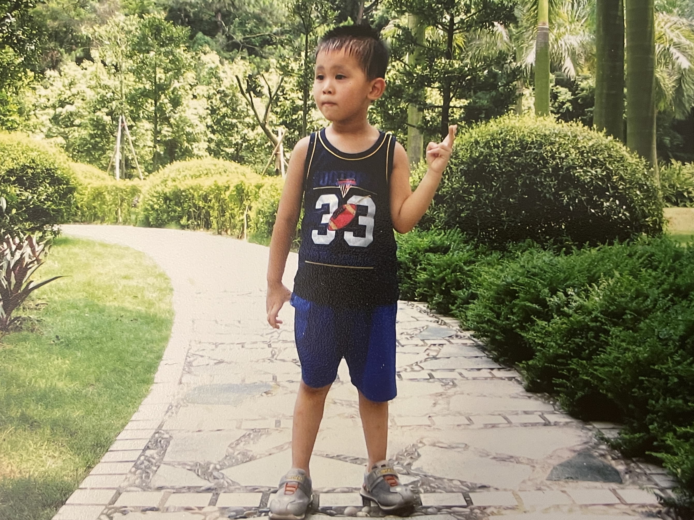
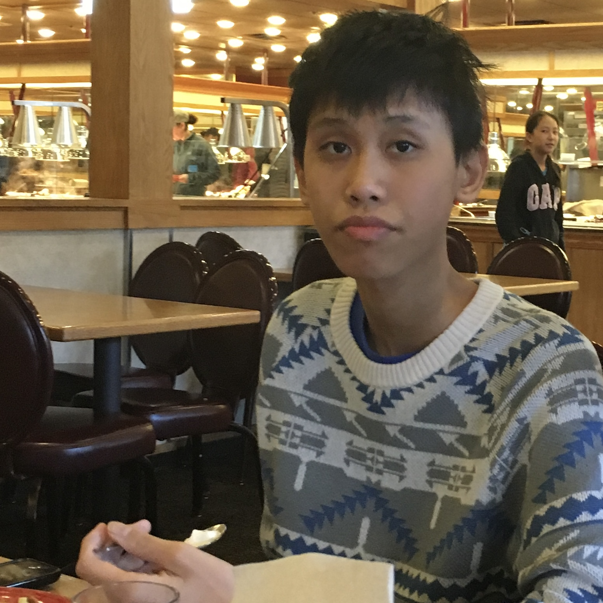
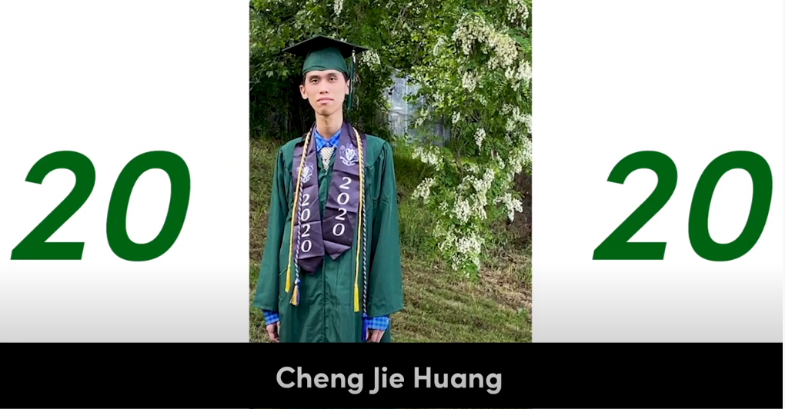

The Beginning
I was born in Guangzhou, China, on September 3, 2001, and spent my first 10 years of childhood there. Now, those years feel like a distant dream. The quality of life wasn't as high, but I cherish the simple joys - playing flash games on the computer, receiving new toys, and spirited games of hide and seek with my cousins. Despite the fun moments, I wasn't a stellar student, often getting into fights and missing homework deadlines. Yet, I don't share the desire of many to relive those years. School in Guangzhou was incredibly stressful, with immense pressure to achieve high grades, and teachers didn't hesitate to resort to physical punishment, taking a toll on my physical and mental well-being.

This is me around 5 years old.
Source: taken by mom.
The Move

This is my second year living in Seattle.
Source: taken by mom.
On June 15, 2012, I distinctly recall waking up early on a chilly morning, hauling my luggage as I prepared to leave my home for the last time. Alongside my parents, we embarked on a journey to the airport, destined for Seattle, Washington. Those initial years of my life in the U.S. are the best years of my life; I forged countless friendships, and the school workload was far from overwhelming. Life was relatively carefree, and I excelled academically while enjoy newfound freedoms. However, the era of carefree enjoyment abruptly concluded when I grappled with social anxiety in 7th grade, which rendered me fearful of group interactions and meeting new people. In hindsight, this anxiety was likely rooted in the language barrier that separated me from my peers. Though I've largely overcome it, the lasting impact of that experience still lingers within me.
Recent Years to Now
In June 2020, I graduated from Franklin High School and started my studies at the University of Washington in September of the same year, where I was directly admitted to the computer science major. Currently, I am a senior-year student actively seeking opportunities for growth, including research lab positions and potential job opportunities.

This is my graduation picture during COVID.
Source: taken by dad.
Other Facts About Me
This seems kinda cliche, but here are some more facts about me.
My favorite leisure activity is traveling. I'm not sure if this happens to you as well, but whenever I visit a new or distant place, my mind carves out a unique space for that experience, making it a lasting memory.
My favorite food is sashimi salmon. Eating salmon raw is just another experience, you get to taste the untouched flavor of the fat that can't be achieved when it is cooked and seasoned.
I stand at approximately 6 feet 3 inches, making me quite tall. It's a mystery why I reached this height, as both of my parents have rather average heights.
My favorite band is CHVRCHES (pronounced "churches"). They are a Scottish trio known for their synth-pop music and have gained recognition for composing theme music for various triple-A video games. My top pick among their songs is "Playing Dead."
I enjoy watching motorsport, specifically Formula E and Formula 1. Besides these two, I don't follow any other racing series because, personally, I find them rather uninteresting. However, I respect differing opinions.